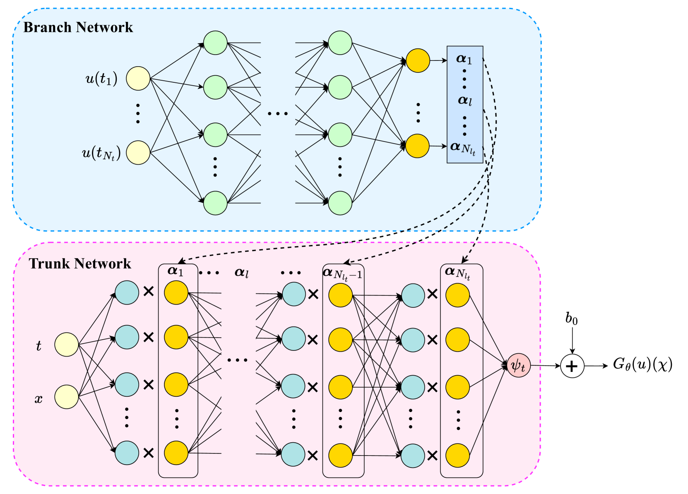

Jichuan's research sits at the intersection of structural dynamics,
scientific machine learning, and structural health monitoring.
Recurring threads include neural-operator surrogates for full-field response prediction,
multi-fidelity learning for systems where high-fidelity simulation is expensive,
and reinforcement-learning controllers for vibration mitigation and real-time hybrid simulation.
Surrogate models for full-field cable-stayed bridge dynamics
Neural operators
DeepONets
Structural dynamics

Full-field DeepONet architecture used as the surrogate for cable-stayed bridge dynamics.
High-fidelity finite-element simulations of cable-stayed bridges resolve full-field dynamic
response but are too expensive for design iteration, uncertainty quantification, or real-time
decision support. Existing surrogates predict scalar outputs (e.g., peak displacement) and
lose the spatial detail that engineers actually use.
We propose a spatio-temporal full-field DeepONet that returns multiple dynamical fields
in a single forward pass. The architecture strengthens branch–trunk interactions and inherently
encodes spatial correlations between outputs. We benchmark three DeepONet variants on a
cable-stayed bridge model; the full-field variant achieves the highest accuracy at the lowest
inference cost, making it a practical surrogate for downstream UQ and control studies.
Multi-fidelity surrogates for shipboard shock response
Multi-fidelity learning
Transfer learning
Shock dynamics
DeepONet residual model for multi-fidelity shock prediction.
High-fidelity shock simulations of shipboard structures capture whipping and resonant
response, but their cost rules out the parameter sweeps that designers need. Low-fidelity
models are cheap but systematically miss those dynamics, so naïvely substituting them is unsafe.
We characterize the discrepancy between low- and high-fidelity shock models under impulsive
loading, then learn a residual correction with Deep Operator Networks (DeepONets) and recurrent
architectures (RNN, LSTM, GRU). Combining transfer learning with residual learning, the
resulting multi-fidelity surrogate inherits the speed of the low-fidelity model while recovering
the accuracy of the expensive one. The work was conducted under an Office of Naval Research
technical report.
Denoising wireless MEMS sensors for infrastructure monitoring
Wireless sensing
MEMS
Generative denoising
MEMS accelerometer module used in the GAN-based denoising study.
Wireless MEMS accelerometers are the workhorse of low-cost infrastructure monitoring,
but their low-frequency noise floor obscures the modal signatures and subtle defect signals
that engineers actually need to detect.
We calibrate MEMS accelerometers against reference sensors, then train a Generative Adversarial
Network to denoise the low-frequency response, comparing against empirical mode decomposition
and wavelet baselines. A LabVIEW-based host environment supports durability testing
(temperature, salt-spray) and field deployment, including synchronized hardware on tunnel
diagnosis vehicles for hidden-defect inspection.
Adaptive vibration control of human-loaded footbridges
Reinforcement learning
TD3
Semi-active TMD
RL-based vibration-control loop for the bridge–pedestrian–STMD system.
Slender pedestrian footbridges are vulnerable to human-induced vibrations that violate
serviceability limits. Conventional passive tuned mass dampers cannot adapt to crowd density,
gait variability, or human–structure feedback, leaving residual response under realistic loading.
We build a coupled model of bridge, pedestrian, and semi-active tuned mass damper (STMD), then
train a TD3 agent to control the STMD under both periodic and stochastic pedestrian loading.
The study reports the influence of key hyperparameters (learning rate, discount factor) on
closed-loop performance and proposes a general scheme for RL-based STMD control of pedestrian
bridges.
Real-time hybrid simulation under wave and earthquake loading
Real-time hybrid simulation
DDPG
Feedforward compensation
DDPG + feedforward control architecture for the RTHS transfer system.
Real-time hybrid simulation (RTHS) of structures under wave and earthquake loading is limited
by servo-hydraulic time delay and tracking error, especially in worst-case loading where
delay-induced phase lag can destabilize the test. Model-based controllers compensate only
partially and depend on accurate plant identification.
We build a Simulink digital twin of an underwater shaking-table system and validate it against
physical experiments. A DDPG controller trained against this twin reduces worst-case time
delay by 6.54% and tracking error by 7.52% relative to a model-based controller (and by
123.48% / 89.95% relative to no compensation). Adding feedforward compensation to DDPG yields
3.28% maximum perturbation versus 5.88% (PI) and 10.57% (FF only) on a benchmark RTHS problem.
For the underlying papers and links, see the publications page.